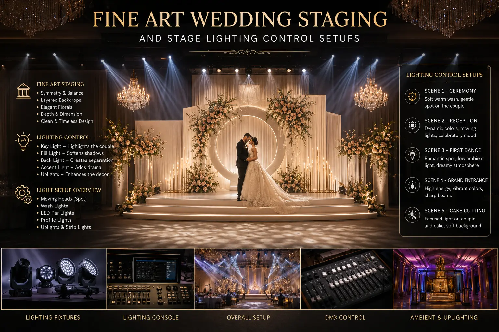
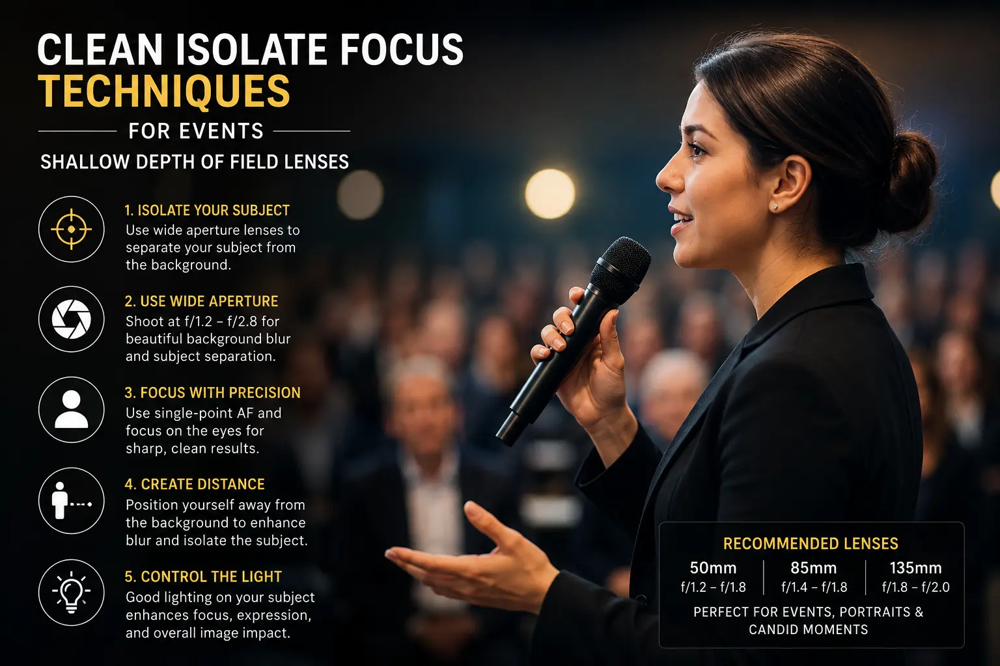

Avoiding Visual Overload in Massively Crowded Marriage Halls
The Chaos of Celebration: The Challenge of Large Venue Shoots
Traditional Indian weddings are celebrated on an extraordinary scale, often gathering thousands of guests in massive marriage halls (mandapams). While these gatherings are filled with immense joy, energy, and rich cultural rituals, they present a significant challenge for photographers. The visual environment is characterized by intense activity: guests moving constantly across the floor, complex stage decorations with saturated colors, and varying venue lighting. This combination can easily lead to visual overload, causing the key subjects of the day—the bride and groom—to get lost in the surrounding clutter.
Without careful planning, wedding photos can feel chaotic, with elements like plastic chairs, stray guests, or uneven background shadows competing for attention. To solve this, premium photographers use creative staging and technical camera adjustments. By working with the **Best wedding photographers near me** and focusing on **Fine-Art Wedding Staging**, couples can ensure their wedding frames look elegant, clean, and focused.
Through specialized equipment and **Managing crowded wedding backgrounds** using advanced focus and lighting techniques, you can capture timeless memories in even the busiest environments.
The Psychology of Space: Designing Visual Balance in Crowded Venues
Managing a large event requires understanding how the human eye processes visual information. When a frame is filled with high-contrast elements, saturated decorations, and multiple moving faces, the viewer's eye is pulled in different directions. This visual clutter distracts from the couple's expressions, reducing the emotional impact of the photo.
Professional photographers address this by creating a clear visual hierarchy. By controlling depth, lighting contrast, and framing, they ensure the couple remains the brightest and sharpest element in the image, while background distractions are softened. This approach transforms a chaotic scene into a balanced composition, turning the venue's color palette into a soft, textured background rather than a visual distraction.
This is especially important during key rituals like the Tying of the Mangalsutra or the Exchange of Garlands, where the stage is often crowded with family members. Managing these moments requires clear communication, physical positioning, and technical camera configurations.
Technical Solutions: Shallow Depth-of-Field and Focal Compression
Isolating the couple in a busy hall requires a combination of wide-aperture lenses, strategic lighting, and creative framing.
- Using shallow depth of field lenses for events. The most effective way to blur busy backgrounds is using **shallow depth of field lenses for events**. Prime lenses like 85mm f/1.4, 105mm f/1.4, or 135mm f/1.8 create beautiful background compression, turning crowds into soft, colorful bokeh.
- Professional stage lighting control. Venue lighting can be harsh and uneven. Proper **stage lighting control** involves placing off-camera flashes or strobes with grids to light the couple, separating them from the background structures.
- Capture premium candid frames near me. Searching for **premium candid frames near me** helps locate photographers skilled in documentary style. Instead of generic group shots, candid photographers focus on micro-expressions, using nearby objects to block out distractions.
- Applying clean isolate focus techniques. Master **clean isolate focus techniques** by locking onto the subject's eyes. Use foreground elements—like flower arrangements or temple pillars—to frame the couple, naturally hiding busy background crowds.
Isolate the Subject
Using wide-aperture lenses blurs out background crowds, keeping the focus entirely on the couple's emotions and gestures.
Elevate Visual Appeal
Fine-art staging transforms a standard marriage hall into a soft backdrop, giving your wedding album a premium look.
Manage Harsh Lighting
Off-camera lighting control balances strong venue lights, preventing color wash-outs and maintaining natural skin tones.
Capture Clean Candid Moments
Clean focus techniques isolate fleeting glances and emotional interactions, keeping candid frames clear and uncluttered.

Lighting Under Pressure: Balancing Venue Spotlight and Ambient Glow
One of the biggest challenges in marriage halls is the mixed lighting environments. Stages are often lit with strong LED spotlights, while the guest seating area is filled with warm fluorescent tubes or decorative string lights. This mix of color temperatures can create unnatural skin tones and harsh shadows.
To manage this, professional crews use portable strobe lights and soft modifiers. By placing key lights at a 45-degree angle to the couple and using grids to direct the beam, photographers can illuminate the subjects with clean, color-accurate light while letting the busy background fall into soft shadow. This separation creates a sense of depth, making the couple pop from their surroundings.
Additionally, photographers work with the decorators to adjust stage lights. Dimming harsh overhead LEDs and using soft backlighting helps soften the background, allowing the photographer's strobes to shape the couple naturally.
Staging and Framing Strategies in Busy Halls
In addition to lens choice, adjusting your shooting angles is key to managing busy backgrounds.
- Shooting from a low angle. Get low and shoot looking up at the couple. This angle replaces busy background crowds with decorative hall ceilings, arches, or light arrays, creating clean backdrops.
- Using architectural elements as flags. Position the couple next to pillars, arches, or fabric drapes. These physical structures act as visual shields, blocking out guest movements behind the couple.
- Documenting micro-details. Focus on macro details—like hands holding, jewelry details, or the exchange of garlands—using tight framing to eliminate background distractions entirely.
- Investing in luxury marriage photography packages. Premium **luxury marriage photography packages** include multiple shooters, allowing one photographer to focus on wide traditional coverage while the other captures clean, isolated candid frames.
Wedding Photography Technical Checklist
Prepare for busy venue shoots with this technical gear and setting checklist.
Lens Selection
- Prime Lenses: 85mm f/1.4 or f/1.8 for portraits, 50mm f/1.2 for medium shots.
- Zoom Lenses: 70-200mm f/2.8 for distant tracking and background compression.
- Avoid wide-angle lenses for candid shots as they pull in too much background clutter.
Camera Settings
- Shoot in Manual mode to maintain control over exposure and depth of field.
- Keep the aperture wide (f/1.4 to f/2.8) to blur busy backgrounds.
- Use high-speed sync (HSS) on flashes to balance strong venue spotlights.
Staging Rules
- Position the couple at least 6 to 10 feet away from background walls or decorators.
- Use directional lighting to create separation between the subject and the backdrop.
- Leverage floral arrangements to frame close-ups.
Integrating Video with Isolate Focus
Apply similar isolate focus principles to your wedding films to keep them clean.
- Cinematic manual tracking. Use manual focus tracking with prime lenses to shift focus smoothly between the couple and details, keeping backgrounds soft.
- Stabilized tracking shots. Use gimbals to capture smooth tracking shots, keeping the couple centered while background crowds blur past.
- Audio isolation. Use directional shotgun and lapel microphones to capture clean vows, isolating voices from ambient hall noise.

Conclusion
Managing crowded backgrounds is essential to capture clean, emotional wedding frames in busy venues. By working with the **Best wedding photographers near me** and focusing on **Fine-Art Wedding Staging**, couples can ensure their wedding frames look elegant.
Through wide-aperture **shallow depth of field lenses for events**, off-camera **stage lighting control**, and **clean isolate focus techniques**, you can separate the couple from the crowd.
At The PhD Ads in Madurai, we provide premium **luxury marriage photography packages**, capture **premium candid frames near me**, and specialize in managing complex backgrounds to deliver timeless wedding albums.
Key Topics
Capture Clean, Elegant Wedding Memories
Planning a wedding in a busy marriage hall? At The PhD Ads in Madurai, we use advanced isolate focus techniques and custom lighting to keep the focus entirely on your connection.
Email: team@e2o.in